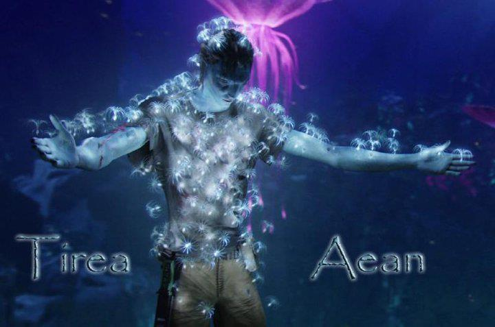

Tirea Aean
The Blue One
Lesson Two: Past and Future
<- Previous Next ->! And welcome to Lesson 2 of Learn Na'vi Grammar the Easy Way.
Ok so now we discuss how to talk about the past and the future.
The Past
In English, verbs are usually changed somehow to show that whatever it is happened in the past. For example:
| eat | - | ate |
| find | - | found |
| run | - | ran |
| hunt | - | hunted |
| walk | - | walked |
The pain about this in English is, these are very unpredictable and have to just be memorised.
In Na'vi, verbs are also changed, but it is very predictable. You just put something inside in order to change it to a specific meaning. For talking about the past, the following are inserted into the Na'vi verb:
| am | - | something happened in the past |
| ìm | - | something just happened in the recent past |
For example:
I hunt hexapede.
oel yerikit tamaron
I hunted hexapede.
tìmaron oel yerikit
I just hunted hexapede.
As you see, I took advantage of the flexible word order of Na'vi in these examples. :) Also, when speaking or reading, don't put emphasis on the little part that was put in. Rule of thumb: The original verb nearly always keeps its stress.
By the way, this is a :

The Future
In English, to talk about the future, we use a helper verb will. For example, I will eat teylu. and He will help me.
In Na'vi, we don't use a helper verb like will. Instead, like talking about the past, something is put inside the verb that means it will happen in the future. For talking about the future, the following are inserted into verbs:
| ay | - | something will happen in the future |
| ìy | - | something is about to happen in the near future |
For example:
Oel teyluti yayom.
I will eat teylu.
Poan srung sìyi oeru.
He will soon help me. OR He is about to help me.
(by the way, related to this,)
(This is teylu)
Even though (help) is two words, it's best thought of as a single package. It really means to do assistance. So what I really said there is He is about to do assistance to me.
Also, notice how the ìy is put inside the part of . This is how it's done for all other verbs of this kind. Such as (to work), (to write), etc. Which brings me to the next point...
Where do these little bits go, then?
So how do I know where in the verb to put these things? Well...it's easiest to use the LearnNavi dictionary. Here's how it works. To start, here is the entry for :
taron: [ˈt·a.ɾ·on] JC,PF vtr. hunt
Look at the part in blue. That is the pronunciation guide. In some entries, this part looks all scary and has loads of weird looking symbols. But for this blog post and lesson though, we are only concerned about the two raised dots which I've coloured red here.
These raised dots show you where to put things in.
This blog post only contains stuff that would go in the first dot's space. Some verbs only have one dot. If so, that's where it goes.
kar: [ˈk·aɾ] PF vtr. teach
Idea of colouring the verbs as done in this lesson adopted in the style of Neytiri te Tskaha Mo'at'ite (@NeytiriTeTskaha)
<- Previous Next ->